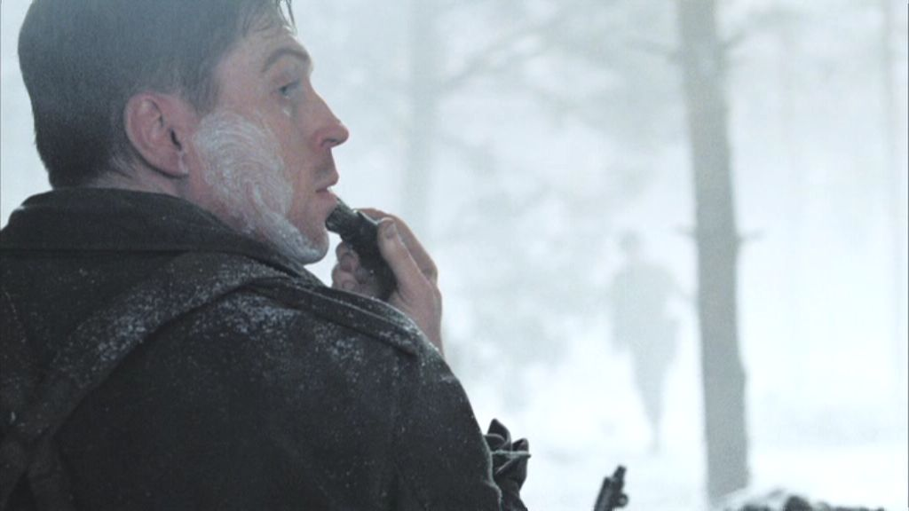
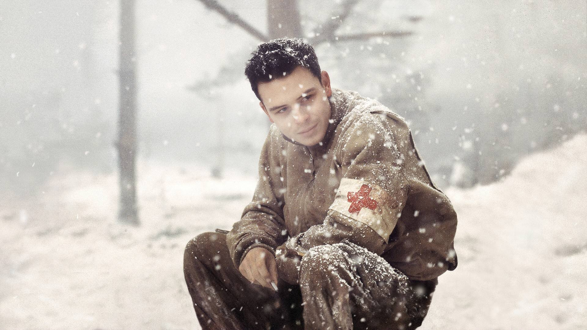
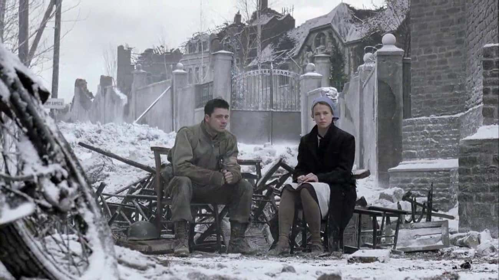
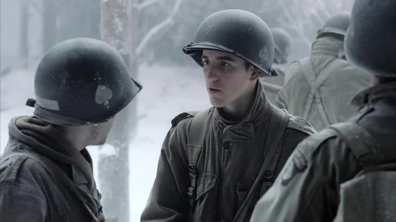
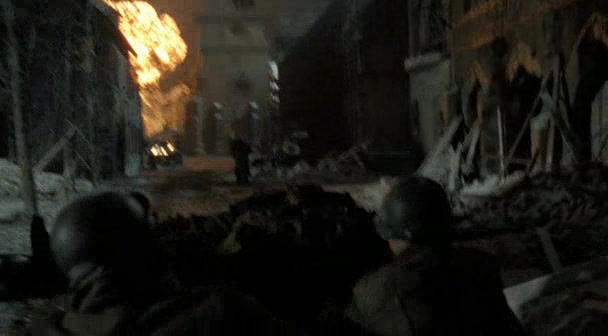
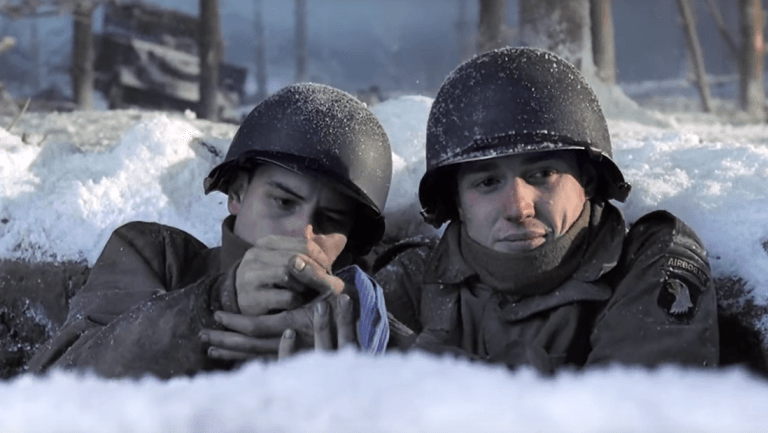

01
阿登森林 · 围困初期防线是一片没有暖气的树林

温特斯雪中剃须／本集日常配图，非将军视察的对应镜头。剧情事实E 连在巴斯托涅外围守住阵地。严寒、缺少冬装与补给，使散兵坑里的等待本身成为消耗；指挥层仍要求守线、填补空隙。[1]
这一场为什么重要 · 个人解读
先看懂“守住”的成本，才能看懂本集的慢。部队没有向前推进，并不表示身体和心理停止受损。温特斯仍剃须的微小动作，可以读作在环境失控时维持一点日常秩序；这不是对其他士兵疲惫状态的责备。

巴斯托涅 · 1944 年 12 月 · 比利时巴斯托涅及周边阿登森林
前一集把 E 连送进巴斯托涅附近的森林；这一集沿着医务兵尤金·罗的脚步，重新丈量这场围困。对指挥者来说，地图上要守住的是一条防线；对罗来说，同一片树林被分成一处处等待救护的散兵坑。吗啡、绷带、干袜子和一块巧克力，成为他不断寻找、分配的东西。镇内的护士勒梅尔让他短暂遇见一个理解照护重负的人，而圣诞节的破坏又把他推回失去与疲惫之中。本篇仅讨论前六集：从救护的物资条件，到不能兑现的承诺，再到结尾的一次包扎，追问人与人怎样继续互相托住。[1]
本页范围回顾本集与必要的前集背景；以下主题分析针对剧集呈现，历史补充另作说明。
8 个关键场景，连起本集的因果与变化。
按剧中叙事顺序排列。批注默认展开，可直接阅读场景的意义。

温特斯雪中剃须／本集日常配图，非将军视察的对应镜头。剧情事实E 连在巴斯托涅外围守住阵地。严寒、缺少冬装与补给，使散兵坑里的等待本身成为消耗；指挥层仍要求守线、填补空隙。[1]
先看懂“守住”的成本，才能看懂本集的慢。部队没有向前推进，并不表示身体和心理停止受损。温特斯仍剃须的微小动作，可以读作在环境失控时维持一点日常秩序；这不是对其他士兵疲惫状态的责备。
剧情事实罗四处寻找吗啡、绷带、血浆和工具。他向戴克询问急救包里的物资，发现对方不清楚物品放在哪里；手上有一份急救包并不代表知道怎么用。[2]
救护能力在这里是一条脆弱的链：找到东西、及时到场、判断伤情、完成转运，任何一环断掉都会产生后果。镜头跟着罗跑来跑去，观众因此开始关心药品在哪个口袋里，而不只是关心敌军在哪个方向。

罗与勒梅尔在镇内交谈／本集配图，非首次索取补给的镜头。剧情事实罗送来伤员，向护士勒梅尔索取医用品。镇内也缺物资，伤员无法继续撤离；她给出有限的补给和用作绷带的床单，并送他一块巧克力。[3]
树林与镇内并非“危险”和“安全”的简单分界。罗带来需要护理的人，也带走有限物资；两处共同承受同一个包围圈。巧克力的出现让交易之外多了一次关心：被需要了一整天的罗，也短暂成为被照顾的人。

朱利安与赫夫隆在雪林中交谈 · 本集人物配图，非伏击瞬间剧情事实巡逻遭到伏击，朱利安倒在敌方火力范围内。赫夫隆想把他带回来，尼克森命令撤退；后来，赫夫隆说自己答应过把朱利安的东西送给其母亲。[2]
赫夫隆面对的是一个具体的人和一句具体的承诺；尼克森面对的是继续接近伤员会让更多人暴露的局面。这里没有足够信息让观众把决定简化成冷酷或正确。不可完成的救援，仍会在幸存者心里留下必须承担的重量。
剧情事实罗提醒托伊保持脚部干燥、换袜子，随后找到沉浸在自责中的赫夫隆，给他巧克力。赫夫隆坚持认为自己本该救到朱利安。[2]
本集把预防、包扎和安慰放在同一条照护路径里。巧克力不能反驳赫夫隆的内疚，罗也没有让一句安慰解决一切。他选择先坐下来、把一点食物递过去；陪伴的价值，正在于不要求对方马上变得好受。
剧情事实罗注意到勒梅尔的双手，认为她的触碰能够安抚伤者，是来自上帝的天赋。勒梅尔拒绝这种说法，直言护理让她痛苦，并说自己不想再面对伤员。[3]
这段对话打断了对照护者的浪漫想象。罗表达敬意，勒梅尔却提醒他：能够帮助别人，并不会自动消除自己所受的损伤。两个人之间的亲近，可以理解为终于遇到懂得这种矛盾的人，不必把它断言为爱情。

罗来到燃烧的救护站废墟前 · 第 6 集后段画面剧情事实辛克传达麦考利夫拒绝投降的圣诞消息。威尔士随后受伤，疲惫的罗继续救护；他再进镇时，收治处已遭轰炸，他在废墟中找到勒梅尔的蓝色头巾。[3]
集体叙事能够说“我们挡住了进攻”，个人却还在经历一位朋友的消失。两种尺度在圣诞节相遇，使胜利的意义变得沉重。废墟与头巾传达了剧中失去的事实；此处不把两人私下相处或道具细节当成逐项历史证据。

本集结尾画面：罗为赫夫隆包扎手部，使用蓝色布条。剧情事实罗回到阵地，发现赫夫隆的手受伤，撕开蓝色头巾替他包扎。赫夫隆注意到罗叫了他的昵称“Babe”；两人有了短暂的玩笑，随后继续守线。[3]
结尾没有让罗发表战胜悲伤的宣言。他只是处理眼前这只手，并在称呼上靠近了一点。头巾从私人记忆变成实际的包扎材料，失去因此进入下一次照护。亲近没有取消岗位责任；一句催他盯住防线的提醒把两者重新放在一起。
切换阶段，点人物或关系，阅读具体证据。
阵地和镇内都缺少物资，罗与勒梅尔建立有限的补给与理解。
用具体场景对照本集的两种处境。
指挥必须考虑阵地缺口、火力、撤退和整体补给，决定会影响一支队伍。
罗接触的是具体伤口、冻伤与惊恐；他需要在同一环境里找到可以立即使用的东西。
空隙会被敌军穿透，前进救人也会暴露更多士兵。
↔药品不足、脚部潮湿和无法撤离的伤员，都在制造损伤。
命令维持阵地；巡逻接敌后决定是否继续暴露人员。
↔分配有限医用品，判断先处理哪种伤情，也决定何时坐下陪一个人。
一条防线没有崩溃，是集体层面的结果。
↔一次包扎、一次护足提醒，也是在避免这条防线的人继续耗损。
两种尺度共同构成坚守。全局判断不能消除个体悲痛，个人照护也无法代替作战部署。本集的独特之处，是让观众走进战报无法充分容纳的那部分责任。
短句原文、中文自译，以及它在这一刻的分量。
“We got nothing.”我们什么都没有了。〔本站自译〕
罗已把伤员送入收治处，开口要吗啡和绷带；对方也只能提供一点。配图为罗的雪地人物画面。
“没有”把战争拉到一个医务兵可以触摸的尺度。职责仍然在，完成职责所需的东西却不在；下一段剧情于是由他寻找资源的路线驱动。[3]
英文短句核对来源列在篇末；中文为本页自译。配图的场景与出处随卡片标注。
只沿本集与此前的线索回看，不揭示后续情节。
剧情事实吗啡和绷带靠搜集获得，床单成为绷带，巧克力从勒梅尔传到罗，再到赫夫隆。[3]
个人解读人与人的联系在本集常常通过物品流转呈现。每一次递交都回应一个具体需要，而小东西的稀缺，使这些动作具有分量。
剧情事实罗谈及勒梅尔能安抚伤者的双手；结尾又发现并处理赫夫隆的手部伤口。[3]
个人解读手既执行照护，也承受伤害。前后场景将“能够治愈”的赞美拉回身体的脆弱，没有让帮助别人变成免于受伤的身份。
剧情事实勒梅尔戴着蓝色头巾，罗在收治处废墟中找到它，后来撕成布条为赫夫隆包扎。[6]
个人解读蓝色在雪地和灰暗建筑之间格外醒目。道具的重复让两段关系发生连接：失去的朋友没有被替代，留下的物品却帮助罗照顾仍在眼前的战友。
本集收在一只受伤的手和一个意外的昵称上。罗没有获得足以解释所有损失的答案；他找到了眼前仍然能做的一件事。这次包扎同时保存着勒梅尔的记忆，也回应了赫夫隆的需要。读到这里，可以把本集理解成一个关于照护限度的故事：不能救下所有人，并不会让下一次帮助失去意义。剧透止于第 6 集，不讨论之后的战况与人物命运。
回到档案首页 ↑